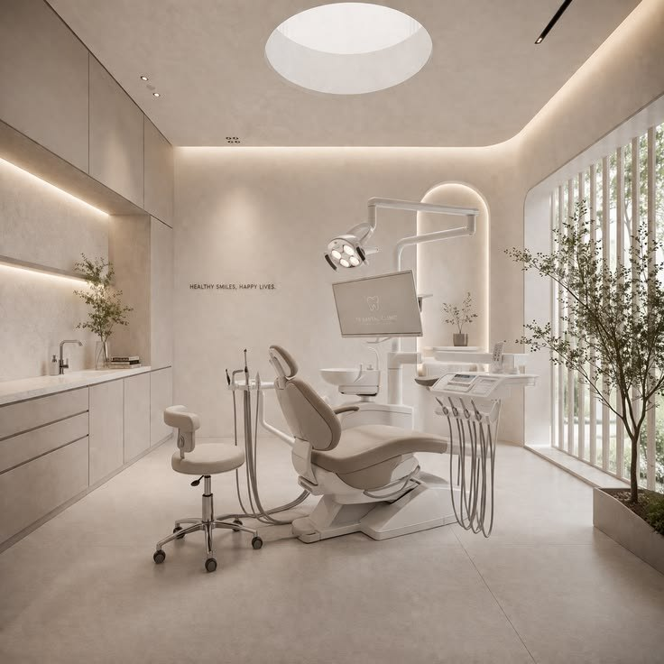
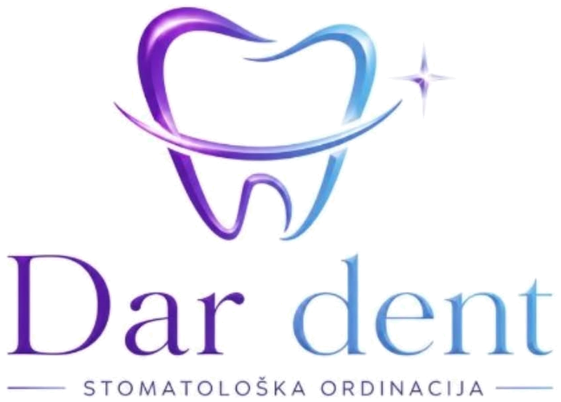
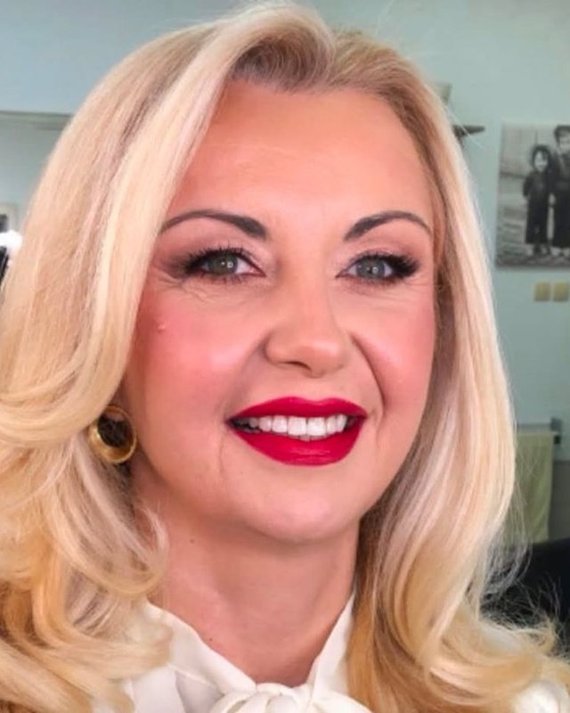
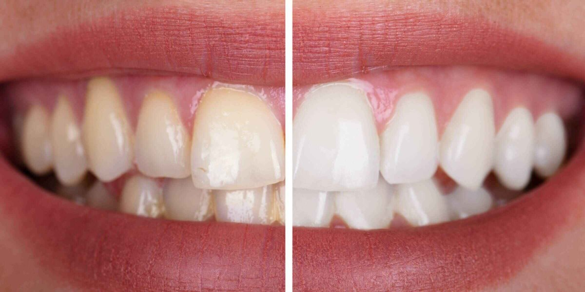
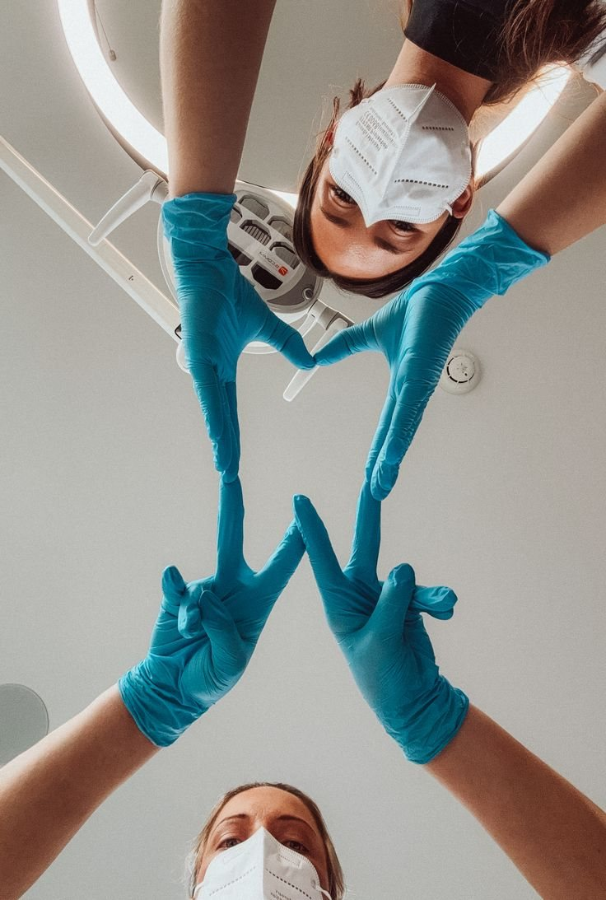
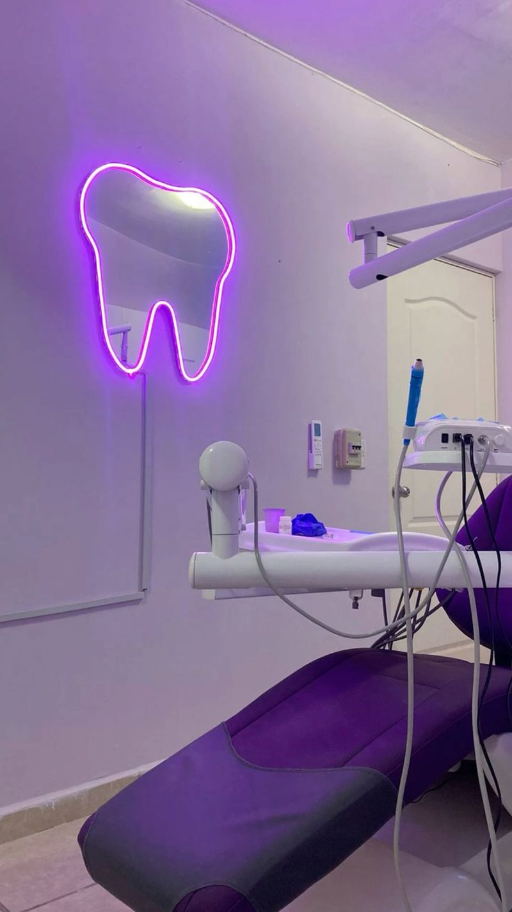
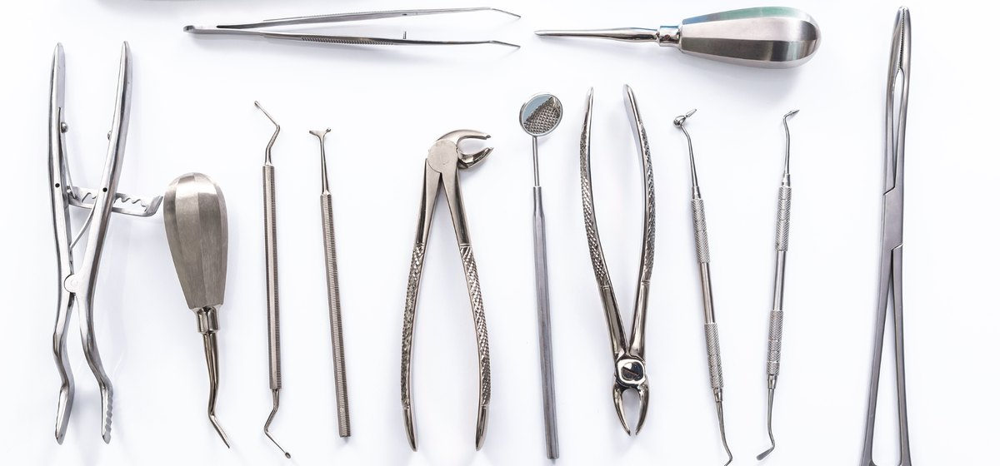

Individualan pristup
Svakom pacijentu posvećujemo dovoljno vremena kako bismo pronašli najbolje rešenje za njegove potrebe.
Stomatološka ordinacija · Novi Sad
Ordinacija u kojoj se nauka susreće sa estetikom — mirno, precizno i bez žurbe. Vodi je dr Darija Vujović.

Jasan plan terapije i cena pre nego što počnemo.
Savremena oprema i kontinuirana edukacija.
Bezbolan pristup i mirna atmosfera bez pritiska.
Rezultat koji izgleda prirodno, a traje godinama.
Usluge
Sedam oblasti, 47 intervencija. Klik na oblast otvara pun spisak sa objašnjenjem šta se tačno radi — bez lekarskog žargona.
Nova ordinacija, savremen pristup i potpuna posvećenost svakom pacijentu od prve posete.
Svakom pacijentu posvećujemo dovoljno vremena kako bismo pronašli najbolje rešenje za njegove potrebe.
Koristimo modernu stomatološku opremu koja omogućava precizniji rad i prijatnije iskustvo.
Radimo po visokim standardima higijene i sterilizacije kako bismo obezbedili maksimalnu sigurnost.
Svaki tretman detaljno objašnjavamo, zajedno sa planom terapije i očekivanim rezultatima.
O ordinaciji
Dar Dent je nastao iz ideje da stomatološka poseta ne mora da bude nešto što se odlaže. Prostor je svetao i tih, oprema savremena, a tempo prilagođen pacijentu — objasnimo svaki korak pre nego što ga napravimo.
Radi nas dvoje stomatologa, pa terapiju planiramo zajedno: dva mišljenja, jedan plan. Pacijente primamo na srpskom, ruskom i engleskom jeziku.
„Dar osmeha. Dar poverenja."

Tim

Doktor stomatologije sa fokusom na estetsku stomatologiju i protetiku. Veruje da najbolji rad izgleda kao da ništa nije rađeno.
Kratka biografija drugog stomatologa — oblast rada, edukacije i pristup pacijentima. Dopunjujemo kada dobijemo podatke.
Galerija




Kako radimo
Poruka preko forme stiže direktno na WhatsApp. Odgovaramo istog dana.
Na pregledu dobijate plan terapije i cenu u pisanoj formi, pre nego što bilo šta počnemo.
Radimo po dogovorenom tempu, uz punu anesteziju i pauze kad su potrebne.
Pozivamo vas na kontrolu i podsećamo na redovne preglede.
Kontakt
Popunite formu i poruka odlazi pravo na naš WhatsApp — bez čekanja i bez naloga.